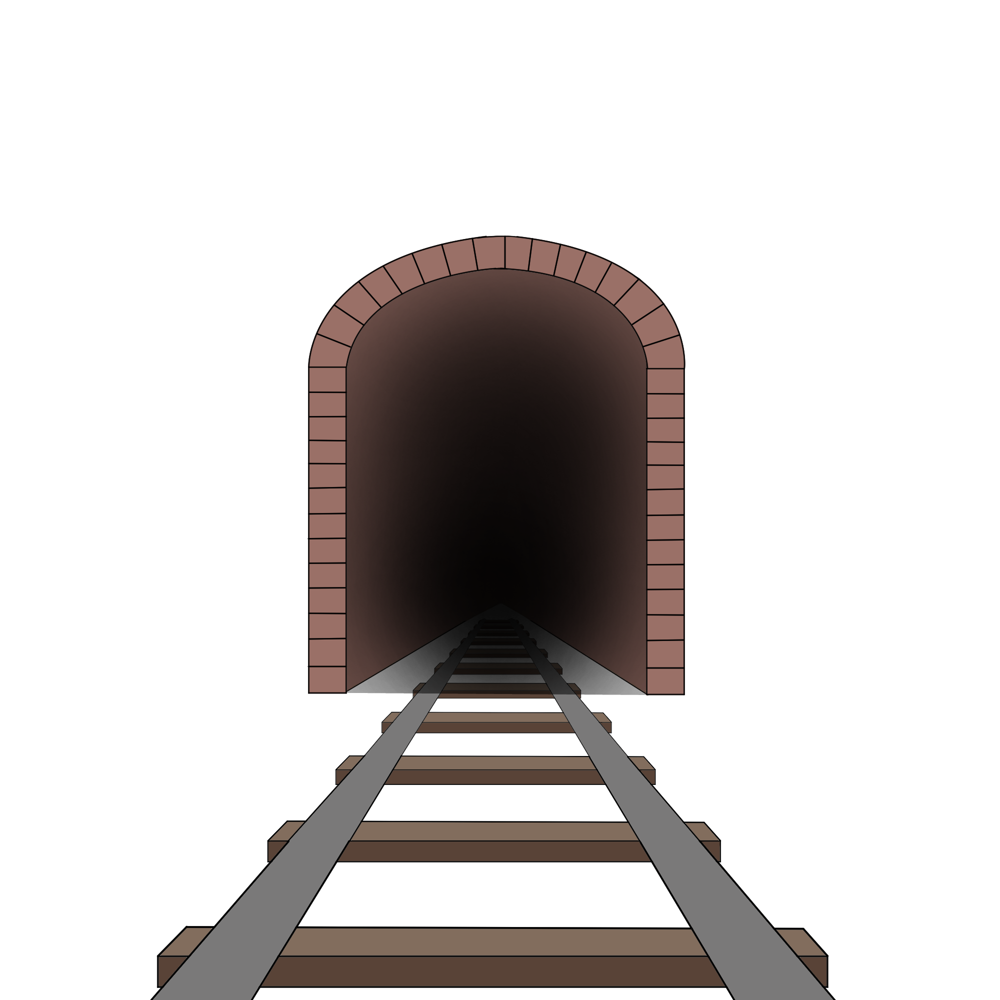
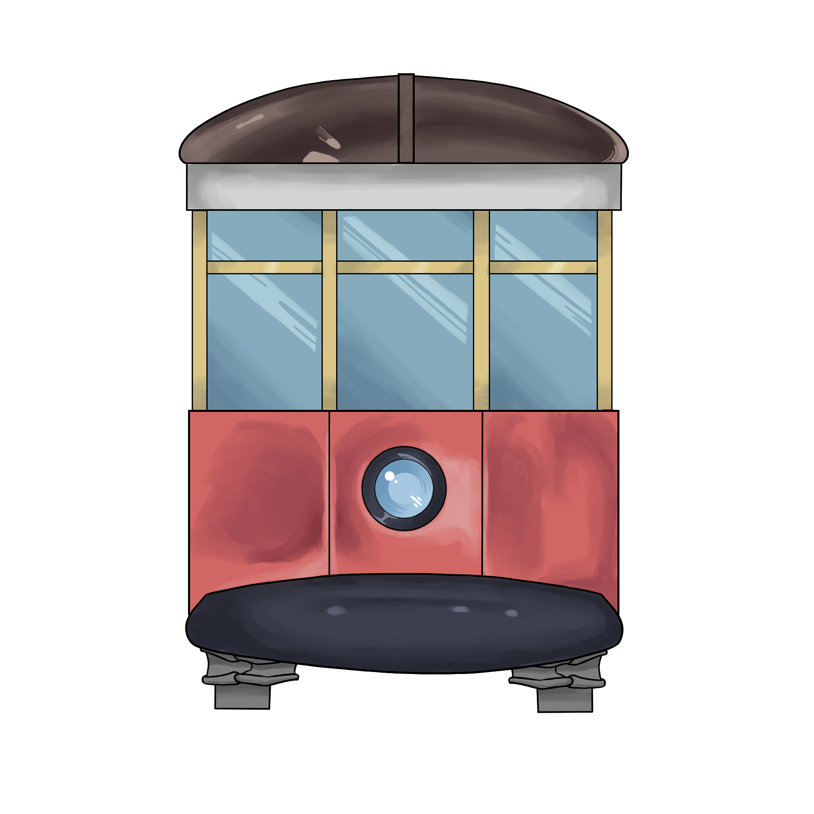
The Abandoned Rochester Subway
An HCD Capstone Project
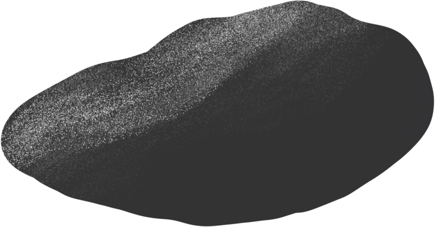
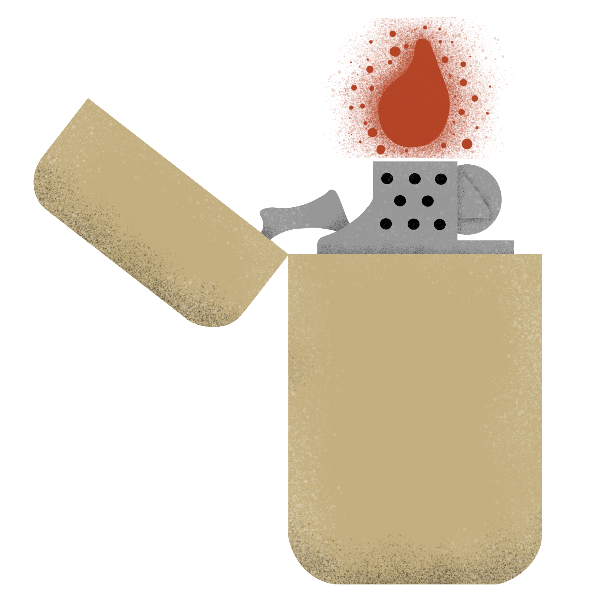
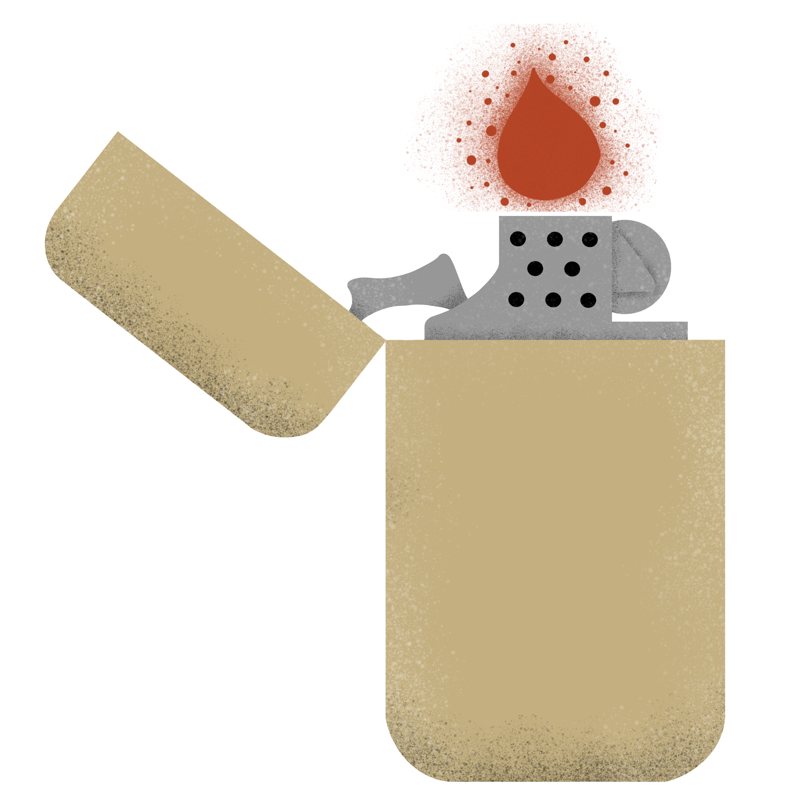
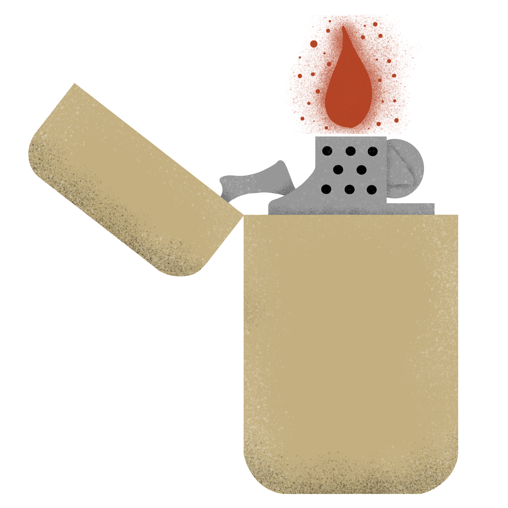
The city of Rochester has a renowned history of being one of America’s first boomtowns, home to many industrial breakthroughs and a pioneer in urbanization. But one of the biggest pieces of this story is the life and death of the subway beneath the city. It was among the first of its kind during its construction, but its downturn was predictable. With the rise of automobiles and highway travel, the subway saw itself quickly get outshined by the newly popular transportation. It turned into a sanctum of graffiti after its abandonment, and made international waves for the new widely popular art form. But to truly understand its impact, one must look back to the very beginning.
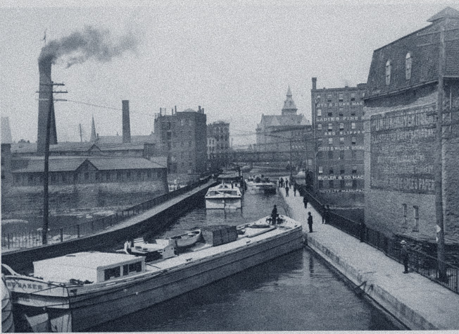
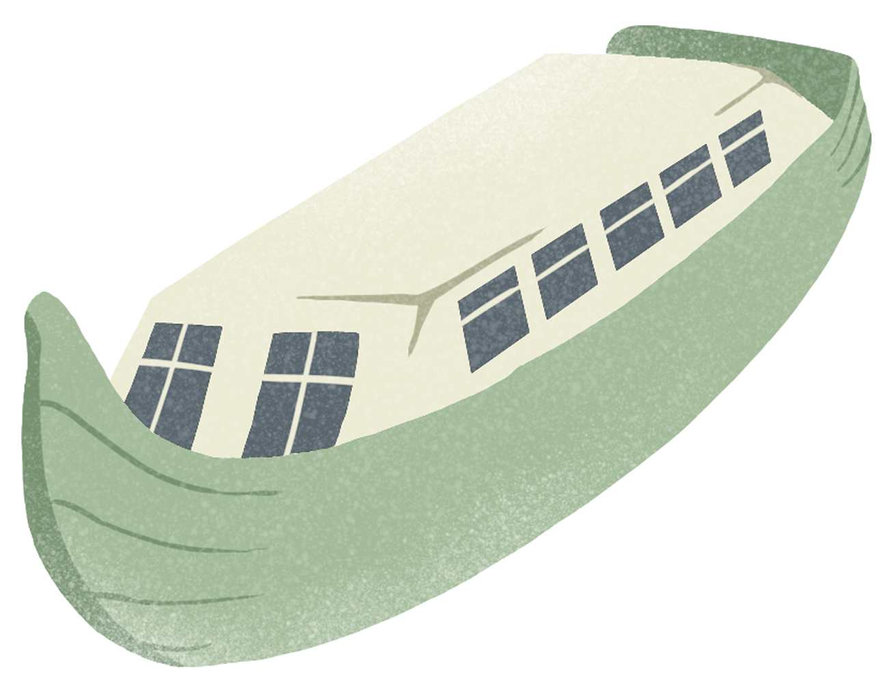
The Erie Canal began construction in 1817, with the objective of linking the Midwest surrounding Lake Erie to the ports of New York City. Beyond this link, the proposed canal also offered an opportunity to stimulate the economy of upstate New York, which had long suffered from a network of inefficient and underdeveloped roads. The canal opened in Rochester in 1823, and the project as a whole was completed in 1825, with the combined effort of tens of thousands of laborers.
Rochester became a gateway of sorts, as all trade moving west would inevitably pass through it. The city itself soon became an economic powerhouse, with roughly 20 operating flour mills along the Genesee River that sent about 500,000 barrels of flour to New York City annually. This earned Rochester recognition as "The Flour City" as well as "America's First Boom Town." The intersection of the Genesee River and the Erie Canal was developed using an aqueduct to carry the canal over the river. An original aqueduct was built on Main Street, but it was eventually rerouted to Broad Street. This intersection served as the heart of urbanization in Rochester, as dense streets and buildings soon surrounded it; a far cry from the scant few rural towns that composed the rest of upstate New York.

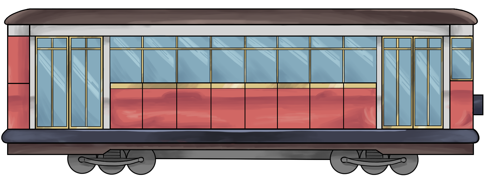
By the early 20th century, the Erie Canal had largely become a burden for the city of Rochester. It had mainly been used to transport raw materials, but as the untapped regions of upstate New York began to serve as the primary source of these materials, and as Rochester industries shifted to consumer products and manufactured goods, the role the canal fulfilled greatly lessened. Additionally, the advancements of technology and emergence of transportation methods like railroads diluted the available trade routes. As such, the canal became increasingly viewed as an infrastructural obstacle rather than a useful resource for the city of Rochester.
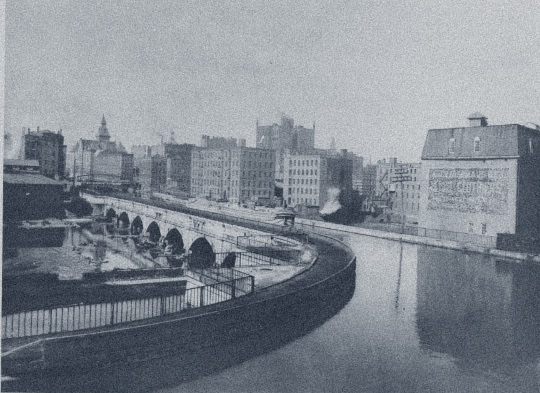
Eventually, the state initiated a project to transform the Erie Canal, in combination with the minor canal systems throughout the state, into a single statewide barge canal system. To accommodate tugboats over animal power, the canal would have to be significantly enlarged, and upgraded with cement and electrically-powered lock systems. With this increased size, it was no longer feasible to use the smaller, preexisting segments of canal that ran through downtown urban areas. As such, this opportunity was used to reroute the canal out of the city, and it was no longer relied upon as the commercial and transportation hub.
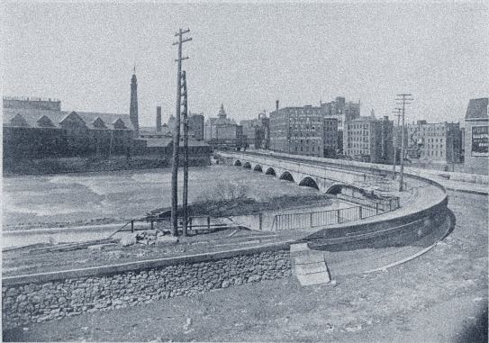
With the canal successfully rerouted, the new space was up for bid within the city. People in the city council had many different ideas of what to turn the space into, and there were even opinions streaming in from the public, but it eventually ended up being between two ideas: a highway or an underground subway. However, at the time, cars and other automobiles were still gaining traction, and many people saw them as toys for the rich.

"We never thought the automobile was going to be practical. It was a rich man's toy." - Henry W. Clune
Due to this fact, the highway bid lost to the subway bid. There were also reasons as to how the subway could solve some of the problems that would’ve been solved by the highway anyway, and it ended up getting approval from all groups within Rochester, such as the newspapers and labor unions. In November 1921, construction was finally approved, and ground was broken in May 1922. But the construction was more than just putting rails down in the tunnel. With the proposed plans, the canal bed had to be both widened and deepened by five feet in all directions. This, plus the increased spending necessary for this new excavation, led to the subway’s opening being delayed all the way until 1927.
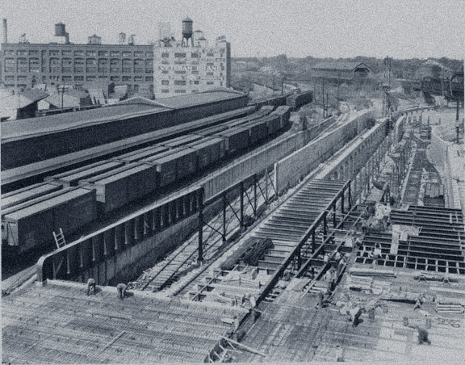
The subway ran smoothly for a while after its debut. The general public was ecstatic about the subway and the distances that it traveled, and it saw frequent use throughout its early years. But that honeymoon period didn’t last too long. With the Great Depression becoming a widespread issue, the subway’s finances were no exception to the downturn the larger economy faced. New York State Railways fell into bankruptcy along with other railroads that used the subway lines; by 1931, all interurban railways were forced to stop operation, leaving the subway as a line with no rail connections beyond its own.

But despite the downturn, New York State Railways maintained its contract with the city of Rochester. Although it seemed futile, as the mass shutdowns led to the public’s opinion to shift from ecstatic to quite negative. It remained this way for several years, but in August 1938, the subway’s operation was handed over to a new company: [insert company name here]. They replaced the subway cars with newer, faster models in an attempt to revive the subway. They believed that these newer cars and an expanded service schedule would save the subway from closure.

In addition, it saw an increase in popularity during World War II. Wanting to keep materials in reserve for the war efforts, the United States began to ration rubber. Tires sales to civilians were banned in January 1942, and gas was rationed to reduce car usage. The subway became essential to those needing to travel far distances in a timely manner. Annual ridership once again peaked in the millions, and proposals to extend the line to what it once was were considered, but by the end of the war in 1948, ridership severely declined again. The proposals were thrown out as the city council began to plan for its abandonment. As a part of this slow closing, the subway saw its weekend service dramatically reduced, with Sunday service being closed altogether in 1952. Their service contract was renewed on a monthly basis, and in 1955, the city council finally voted to end all subway services. On June 30th, 1956, the subway saw its last day of operation.
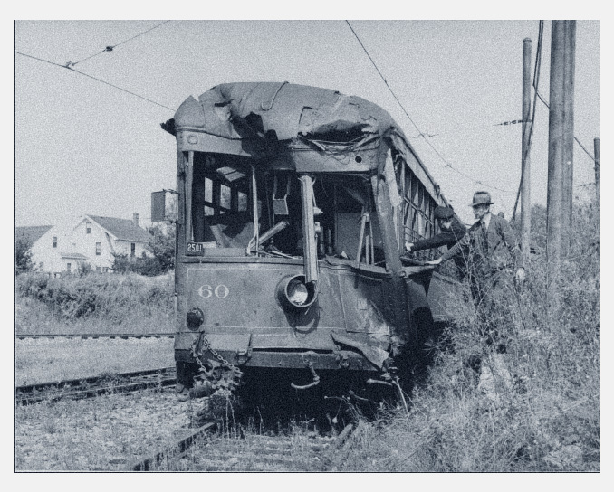
There were many reasons for the closure. Low ridership didn’t just coincidentally happen; there were reasons for people to avoid the subway. There was a severe lack of care for the tracks and the cars themselves, which led to rust and weeds growing all throughout the tunnels, a danger to the cars. Such a large railroad was hard to maintain, and with financial issues being a pressing matter, funds were not often allocated to the subway, or at least not as much as what was needed.
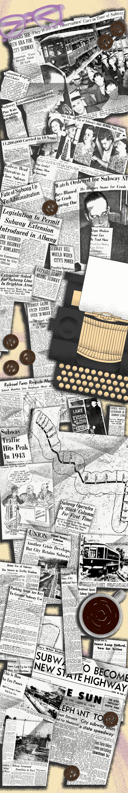

There was also the fact that many people were getting their own cars, and automobiles were rapidly becoming the main form of transportation. The once believed toy of the rich had now become commonplace. People could drive wherever they wanted, and preferred that to the limited lines that the subway could run. The subway was struggling to make a profit, and as less and less people used it, money became a very real problem. Eventually, all cars were decommissioned, save for one.

In the subway’s last years, a new construction project began. One that would succeed where the subway failed: the Inner Loop. This project proposed a highway loop around the central business district of Rochester, and was voted to go through since cars were booming. It was completed in five different parts, starting in 1952 and reaching completion in 1965. It was a grand thing, and many people saw it as the successor to the subway.
However, just like the subway, the honeymoon period didn’t last very long. The actual process of creating the Inner Loop required a lot of demolition within the city, and many historical buildings and communities were lost in the process. While it was argued that the Inner Loop would be beneficial enough to outweigh these losses, there were still many people who were left upset. Apartments were demolished, forcing tenants to find housing elsewhere, the destruction of commercial property forced businesses to seek property in other places, and many more non-residential buildings were destroyed. It was said to have looked like "Coventry after the blitz” (Arch Merrill).
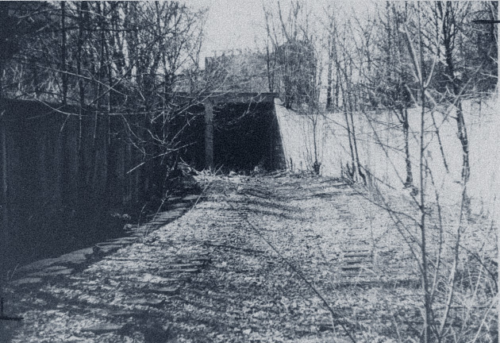
Despite the rise in popularity that cars were seeing, this mass destruction left many in tough places. It made people rethink whether the Inner Loop was something they actually wanted, and even if it was worth the shutdown of the subway. There were articles that painted it in a positive light, but even they couldn’t defend the loop for long. Once its construction was finished, it quickly began to show the pitfalls of urban freeways and their effects on downtowns. Its lifetime was similar to the subway. In fact, plans were made to fill in the Inner Loop, and they have already begun. As recently as 2017, a section of the Inner Loop has been completely filled.
The subway served as more than just a partial guide to create the Inner Loop. In its abandoned state, artists saw potential in the space as a graffiti canvas. Graffiti quickly became widespread throughout the tunnels, and its unique Rochester style gained international recognition. This development was due in part to the tunnels being treated as “legal walls”, or walls that were known to have little police enforcement regarding vandalism. This freedom would be further developed in 2008, where an official legal definition of a “legal wall” was created, and the subway tunnels were granted that title.
Alongside graffiti, hip-hop was rapidly growing parallel to the art within the tunnels. In the late 80’s, hip-hop was experiencing its “golden age,” and saw its influence spread to the tunnel’s graffiti. The walls were painted with art that covered social issues at the time, and were big factors in the spread of awareness towards injustices in society during this period. The formations of “krews” were a result of this, and compounded the amount of activism in the form of graffiti.
However, the attitude towards graffiti hasn’t always been positive. While it serves as a sacred ground for graffiti artists, the city and some of its people disagree with its existence. During this graffiti boom, Edward Koch, Mayor of New York City, led anti-graffiti campaigns that stated it “destroyed [their] lifestyle”. There were also criminologists that came forward in the 90’s that supported “broken window policing” that argued graffiti conveyed that the people of Rochester did not care for the community, and were inviting crime by allowing such a thing to occur. Even in 2008, there were mentions of removing the graffiti because it depreciated not only the value of the property, but of property around it as well; it was claimed to have a negative impact on the entire community.
But despite all of this, there are many positive outlooks about it as well. In 2020, a court case ruled that the graffiti was protected under the Visual Artists Rights Act (VARA) of 1990. VARA states that artists are entitled to the right to document their work before it is erased, and this court case decided that it applied to graffiti as well. So, even in the worst case scenario where the graffiti is all washed away, the same art that made such a heavy impact on the graffiti world internationally will still be preserved through the artists that created it. While the city has begun to cut off some access points to the tunnel, you can still view the graffiti inside it. It’s a reflection pool of the artists that have made their mark here, as well as the culture of the city itself beyond what you can see aboveground.
While the departure of the subway is a step back for urbanism in Rochester, the city is already taking steps to improve the experience of its people. There are several projects being proposed today, and many of them are even seeing progress now. One such project is the ROC the Riverway project. It aims to revitalize the corridor of the city adjacent to the Genesee River, a river with expansive history as the reason for Rochester's early success as a city. The goal is to reconnect the community with the river by enhancing public spaces, waterfront amenities, and economic development.
As stated, the project has already made strides in its initiative. Multiple new and redeveloped parks, district transformations, and road diets have improved the city for its people, encouraging them to engage with the scenery around them. Recently, the Rochester Skate Park has received an expansion, High Falls has received a new state park, and the convention center in the city has been renovated. There are still goals the project has yet to start on, but their aim to revive the city’s true nature is seen through both their actions and their next steps. They plan to transform the old aqueduct that carried the Erie Canal and then the subway, as well as the rest of the Inner Loop to remove the scars that the urban highway left behind.
Many proposals have also been made about the aqueduct specifically. Most of them aim to pedestrianize the street, closing it off to cars and making it a gathering place for the community to hold events. Their goal is to make it a welcoming space that would increase the economic development of the surrounding area as well, creating a positive experience for pedestrians. These proposals have mixed-use development in mind, allowing for sustainable practices by discouraging the use of cars and opting for more energy efficient methods of transportation, such as walking and biking. It also creates a space where people can live, work, and shop in close proximity to each other, adding a vibrant touch to the city itself.
Despite the city barreling towards a newly modern, urban era, the subway still has a place in its future. It serves a new purpose, one that couldn’t have been predicted when it was constructed all those decades ago. It remains a sanctuary for graffiti artists, but it also keeps the history of Rochester alive. The tunnels remain as a symbol of the city’s roots, and the infrastructure has grown into a beautiful landscape for its people to thrive in.